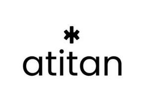

Trade Mark Journal No.2025/028 11 July 2025
UK00004228670 3 July 2025 (9)

- Class 9
- Carrying cases, holders, protective cases and stands featuring power supply connectors, adaptors, speakers and battery charging devices, specially adapted for use with handheld digital electronic devices, namely, cell phones, tablets and electronic sound and image players; Sound systems comprising remote controls, amplifiers, loudspeakers and components therefor; Downloadable computer programs for editing images, sound, and video; Downloadable computer software for creating and editing music and sounds; Radio receivers for reproduction of sound and signals; Sound recording and sound reproducing apparatus and instruments; Personal headphones for sound transmitting apparatuses; Sound mixers with integrated amplifiers; Downloadable software development kits (SDK); Sound recording apparatus; Cables for the transmission of sounds and images; Sound reproducing apparatus; Electric connections and connectors; Sound transmitting apparatus; Downloadable software to control and improve audio equipment sound quality; Electrical connector housings; Downloadable decoder software; Sound projectors and amplifiers; Signal splitters for electronic apparatus; Sound mixers; Sound and picture recording apparatus; Sound and video recording and playback machines; Apparatus for broadcasting, recording, transmission or reproduction of sound or images; Audio electronic components, namely, surround sound systems; High definition multimedia interface splitters; Downloadable computer software to control and improve computer and audio equipment sound quality; Playing devices for sound and image carriers; Downloadable mobile operating system software; Downloadable computer software for processing digital music files; Sound amplifiers; Electronic sound mixing, processing and synthesizing apparatus; Electronic combiners for connecting antennas and receivers; Recorded computer operating system software; Computer hardware and recorded software for processing digital music files sold as a unit; Electric cables, wires, conductors and connection fittings therefor; Portable sound reproducing apparatus; Sound equalizers and crossovers; Apparatus for recording, transmission and reproduction of sound; Telephone connectors; Connection cables; Radio monitors for reproduction of sound and signals; Cable connectors; Digital sound processors; Electrical and electronic connectors; Connectors for electronic circuits.
ATITAN INC
Representative: Fry Heath & Spence LLP